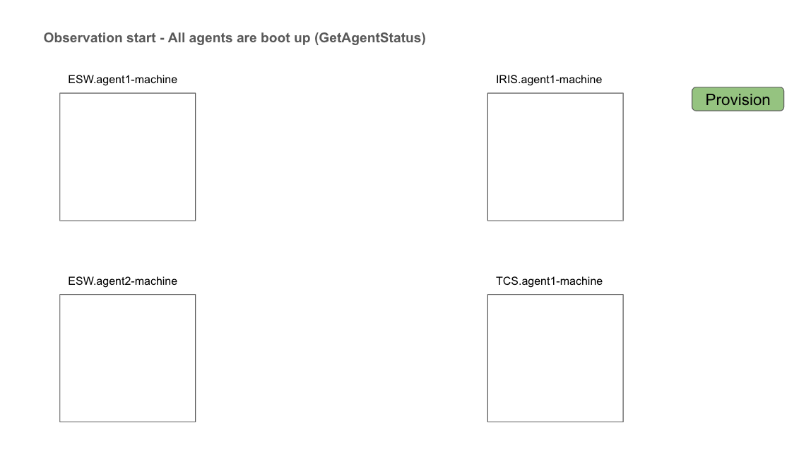
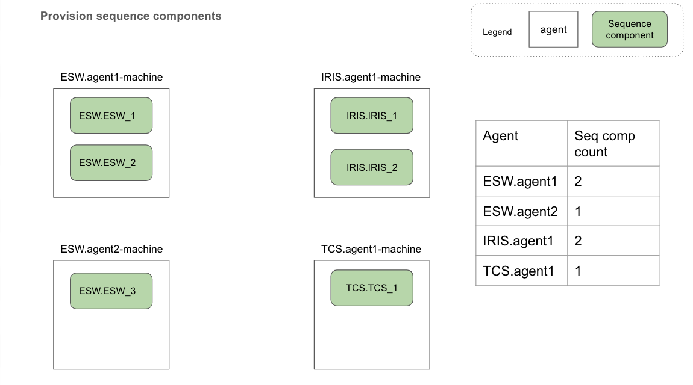
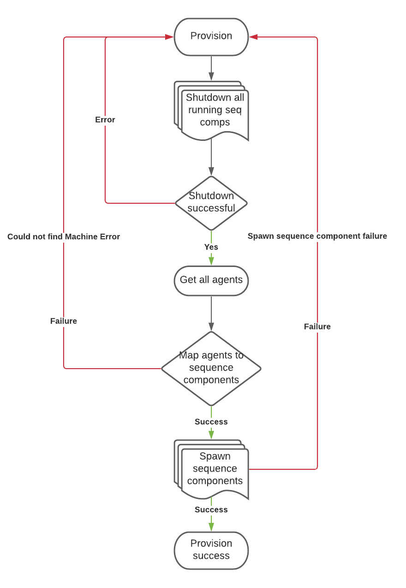
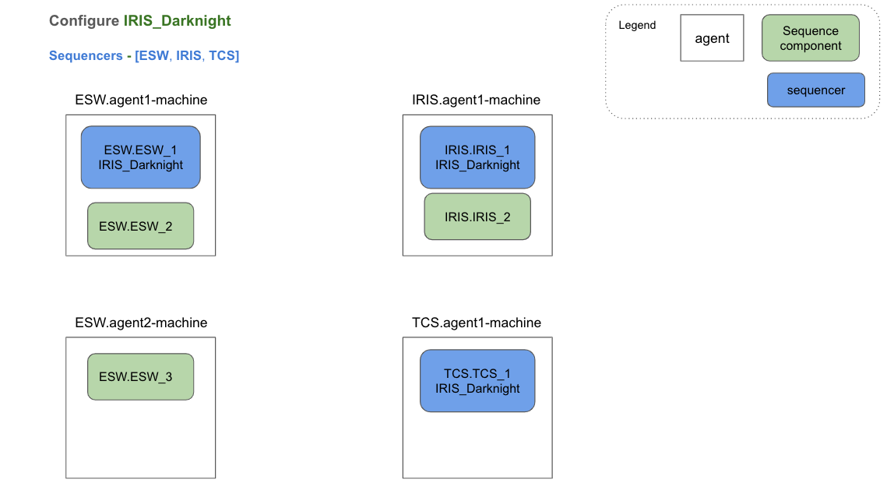
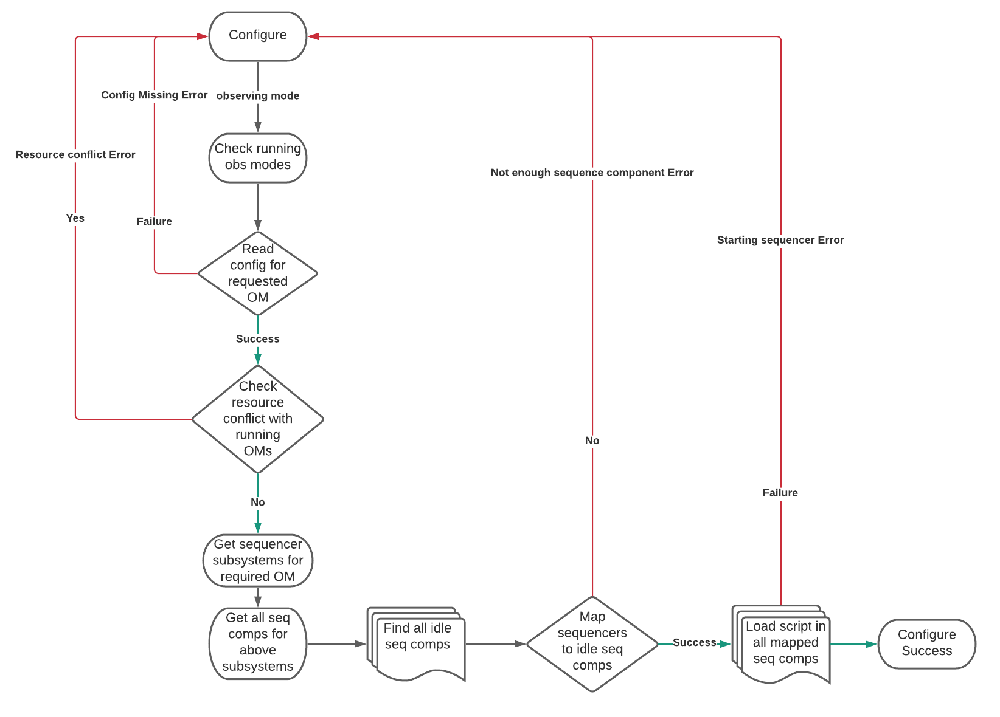
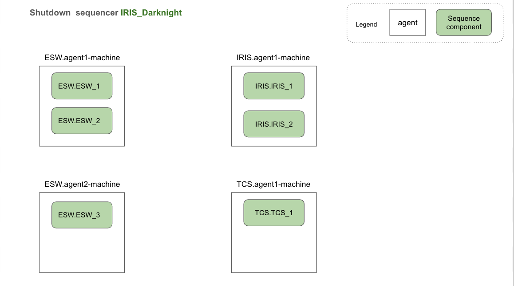
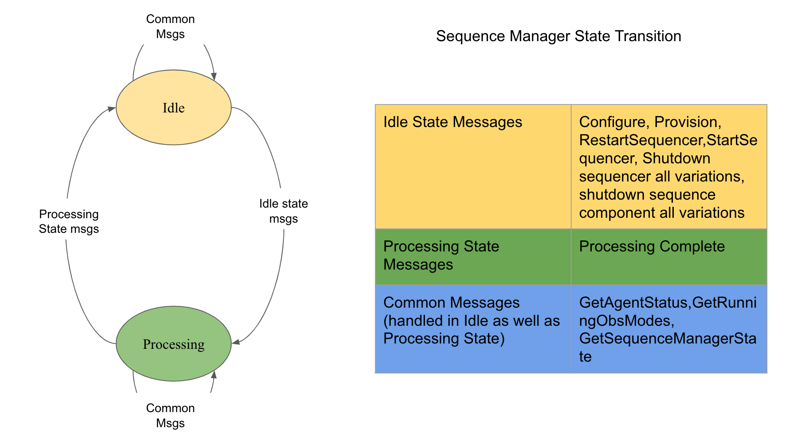

Sequence Manager Technical Documentation
Sequence Manager is a service that is part of the Observatory Control System (OCS) subsystem of ESW. Sequence Manager provides functionality that will be used by the operators and users of the future telescope through user interfaces that will be developed as part of ESW HCMS. Sequence Manager provides functionality needed by user interfaces, but does not take actions by itself unless called by the future operator.
Sequence Manager has the following high-level responsibilities in the ESW.OCS design:
- Start Sequence Components on different machines setup to host Sequence Components and Sequencers. This is called
provisioning. - Start Sequencers as required by a specific Observing Mode/Sequence and initialize each with the correct Script.
- Manage and track Observatory resources. Ensure that the resources needed for a Sequence are available allowing parallel Sequences to execute when possible.
- Monitor overall Sequence execution and perform cleanup at the conclusion of a Sequence.
The following sections provide details on the Sequence Manager.
Introduction to Sequence Manager
Sequence Manager is an ESW component that takes care of provisioning Sequence Components needed for an observation, and the configuration of Sequencer scripts as per observing mode. It has capabilities to start, re-start, shutdown Sequencer/s, shutdown Sequence Components as well as to know status of TMT components such as which script is loaded on which Sequence Component or which Sequence Component/s are running on which agent/host. Sequence Manager is implemented using Akka actors. Sequence Manager provides two communication interfaces that are registered with Location Service.
- Akka-based interface
- HTTP interface
The Akka interface will be used by JVM-based applications to interact with Sequence Manager. The HTTP interface is provided so UI applications can be built which will interact directly with the Sequence Manager (as opposed to using the User Interface Application Gateway).
The Sequence Manager uses the Agent Service and Agents to provision Sequence Components. See: Agent Service for more information.
Modules
Sequence Manager implementation is distributed into the following modules:
esw-sm-api
This Sequence Manager API module code supports the following responsibilities:
| Directory | Responsibility |
|---|---|
| shared | API which is cross compiled to JVM as well JavaScript |
| shared | HTTP client which can be used by JVM as well as scala-js applications |
| jvm | Akka client for JVM applications, Akka actor messages, Akka message serializer |
esw-sm-handler
This Sequence Manager handler module is responsible for providing HTTP routes for the Sequence Manager HTTP server.
esw-sm-impl
This module contains core logic for the Sequence Manager Akka Actor.
esw-sm-app
This module contains a CLI which starts Sequence Manager component as well as the HTTP server of Sequence Manager.
Implementation Details
Boot-up time for TMT ecosystem is expected to start an Agent on every machine that will host Sequence Components and Sequencers, Sequence Manager on an ESW machine, and HCD/Assembly components on respective subsystem machines.
Sequence Manager supports multiple APIs that allow it to configure a set of Sequencers based on an observing mode and cleanup/shutdown Sequencers after an observation is completed.
An extended use case is used here to explain the use of the Sequence Manager API as it is intended to be used during observing. The use case leads to the configuration for an observing mode.
The use case starts with no Sequence Components or Sequencers running in the system as provisioning is not yet done. But an Agent Service is started at boot-time on each machine that will host Sequence Components.
GetAgentStatus
This API allows a future UI to show the status of TMT ecosystem components (Agents, Sequence Components and Sequencers). It allows showing which Agents are up and running, which Sequence Components are running on those Agents, and which Sequencer and/or script is loaded on each Sequence Component.
The figure below shows a simple UI mockup that shows 4 machines are configured with Agents but there is nothing running on the machines.

Provision Sequence Components
This API allows a future UI to provision Sequence Components per Agent. The provision API call requires a simple configuration which specifies the number of Sequence Components needed to be spawned on each particular Agent.
The following diagram depicts status of TMT ecosystem after provisioning as per the configuration argument shown on the right side of the figure.

Provision API will first shutdown all running Sequence Components if any. After shutting down already running Sequence Components, it spawns new Sequence Components on Agents as per a configuration provided with the provision call.
The following flow chart shows the algorithm for provision flow.

Normally, the system is provisioned once at the beginning of observing, and the Sequence Components are then used for all Sequencers needed in the course of a night. The system can be easily re-provisioned if there is a failure or other issue to minimize downtime.
Configuring Sequencers for an Observing Mode
Once the system is provisioned, Sequence Manager can take the configure step. Configure is used for starting Sequencers needed for an observing mode. It also checks for any resource conflicts with ongoing observations. It is allowed that TMT run more than one concurrent observation as long as they do not conflict. Configure API ensures this is the case. If there is a conflict, configure call will fail.
A configuration file mapping observing mode to required Sequencers (called obsModeConfig) is provided to Sequence Manager when it starts. Configure API, checks for required Sequencers and resources in the obsModeConfig file. This config file contains mapping of observing mode to required Sequencers and resources. When configure for a particular observing mode command is received by Sequence Manager, it checks the following:
- Existence of a mapping for required observing mode exists in configuration file
- Availability of adequate Sequence Components for starting Sequencers
- No resource conflict should occur with ongoing observations
If these checks succeed, the Sequencers are configured, the location of the top-level ESW Sequencer is returned to the caller.

Once Sequence Manager configures for an observing mode, a Sequence can be sent to the Top Level Sequencer (ESW sequencer for that observing mode) by SOSS.
The following flow chart shows the algorithm for configure flow.

Shutdown of Sequencers
Once an observation is complete, and the operator determines that it is necessary to configure for a new observing mode, cleanup for the current observation may involve shutting down all Sequencers of that observing mode. Sequence Manager provides shutdown sequencers API variations which allow:
- shutdown of all Sequencers of an observing mode,
- shutdown of all Sequencers belonging to specific subsystem,
- shutdown of a particular Sequencer,
- shutdown of all running Sequencers.
The various shutdown options are also available to handle possible issues during observation execution.

This use case explains the most important way Sequence Manager is used.
Other APIs
Apart from APIs explained above, Sequence Manager also provides following useful APIs:
- startSequencer - start a Sequencer for the provided subsystem and observing mode
- restartSequencer - re-start a Sequencer for provided subsystem and observing mode
- shutdownSequenceComponent - shutdown a Sequence Component with provided prefix
- shutdownAllSequenceComponents - shutdown all running Sequence Components
We anticipate these capabilities will be useful for future user interfaces and dealing with possible issues during observing.
Sequence Manager States
Sequence Manager Actor is implemented as a state machine with two states: Idle and Processing. At any point of time, Sequence Manager must be in exactly one of these states.
The following diagram depicts the state transitions of Sequence Manager:

Implementation of these msgs is asynchronous in nature. So handling any other msgs while previous msg processing is incomplete can result in an inconsistent system. For example, configure Observing_Mode_1 msg is received by Sequence Manager Actor. Let’s assume that this requires starting ESW, IRIS and TCS sequencers. Configure flow has checked for resource conflict. No conflict is there so configure goes ahead with processing. During this processing, if any other msg like startSequencer for IRIS subsystem and Observing_Mode_2 is received then this will result in inconsistent behaviour. To avoid these cases, certain msgs are accepted only when Sequence Manager is idle. When any one of idle state msg is received, Sequence Manager goes into processing state where it accepts only common msgs (read state msgs which will not cause any inconsistency). In processing state, actor waits for processing complete msg. Once processing complete msg is received, actor goes back to idle state and ready to process any of idle state msg. Both idle and processing state can handle common msgs without any state change.
Running Sequence Manager
For running Sequence Manager, please refer this.
Sequence Manager Simulation Mode
Simulation mode for SM is mainly for testing the functionality/scenarios of apps interacting with SM. This functionality meets the requirements for SM simulation.
Approach followed:
-
In this approach we will be spawning actual Sequence Manager, agents, Sequence Components and Sequencers(in simulation mode).
-
When the Sequence Manager is started using the esw-services with the simulation flag, the following things are done.
- If a obs-mode config file is provided using -o flag, it is used and if not then a default obs-mode config is used.
- Three agents are spawned automatically for subsystems ESW, TCS, and IRIS.
-
When the Sequence Manager is up and running(–simulation):
- Suppose the
Provisioncommand is sent to SM. Now as we are using actual agents and Sequence Components, our production level logic can be tested (eg: shutting-down previous seq-comps, agent-allocation for seq-comps, etc). - Suppose the
Configurecommand is sent to SM. Now as we are using Sequencers in simulated mode any obs-mode can be configured (as long as there is an entry for it in the provided obs-mode conf or the default). Also the success as well as all the failure scenarios (resource conflict, configuration missing, etc) can be tested. - All the other APIs like startSequencer, shutdownAllSeqComps etc. will work properly with correct entries made in CSW Location Service.
- Suppose the
-
Only agents will be started in the same JVM process. Since Sequence Components are started by agents using
cs launch ..., command they will not be in the same process.
Running Sequence Manager in simulation mode
For running Sequence Manager, please refer this.